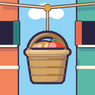

String ropes between windows and shops, and keep the baskets moving as the street grows.
A cosy network game on a colourful street: neighbours order bread, tomatoes, milk and tea from their windows; you connect them to the shops with ropes and baskets. Ropes cannot cross, hooks fill up, and every day brings new neighbours. Pick one upgrade after each day and see how long your street stays happy.
Pencerelerle dükkânlar arasına ip çek; mahalle büyürken sepetleri yetiştir.
Renkli bir sokakta sakin bir ağ oyunu: komşular pencereden ekmek, domates, süt ve çay ister; sen onları iplerle ve sepetlerle dükkânlara bağlarsın. İpler kesişemez, kancalar dolar, her gün yeni komşular taşınır. Her günün sonunda bir geliştirme seç ve mahalleni ne kadar mutlu tutabildiğini gör.